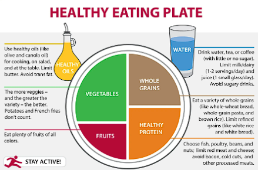

Weight Management Stratigies
Weight management is a critical aspect of maintaining a healthy lifestyle. It goes beyond just achieving an ideal weight; it encompasses various strategies that promote overall well-being and reduce the risk of chronic diseases. Whether you're aiming to lose weight, maintain it, or simply improve your health, understanding effective weight management strategies is essential.
In this article, we'll explore various approaches and tips for successful weight management.
Establish Realistic Goals:
Setting realistic and achievable goals is the foundation of successful weight management. Rather than focusing solely on a target weight, consider setting behavioral goals such as incorporating more vegetables into meals, increasing physical activity, or reducing portion sizes. These small, attainable goals contribute significantly to long-term success.
Balanced Diet:
Adopting a balanced diet is fundamental for weight management. Emphasize whole, nutrient-dense foods such as fruits, vegetables, lean proteins, whole grains, and healthy fats. Minimize processed foods, sugary drinks, and high-calorie snacks. Portion control also plays a crucial role; be mindful of serving sizes to prevent overeating.

Regular Physical Activity:
Regular exercise is vital for weight management and overall health. Aim for at least 150 minutes of moderate aerobic activity or 75 minutes of vigorous activity per week, combined with strength training exercises at least two days a week. Find activities you enjoy to make exercise a sustainable part of your routine.
Mindful Eating:
Practicing mindful eating involves being aware of your eating habits and paying attention to hunger and fullness cues. Slow down while eating, savor each bite, and listen to your body's signals. This helps prevent overeating and promotes a healthier relationship with food.
Get Adequate Sleep:
Quality sleep is often overlooked but is crucial for weight management. Lack of sleep can disrupt hormones related to hunger and appetite, leading to increased cravings and overeating. Strive for 7-9 hours of quality sleep per night to support weight management efforts.
Manage Stress:
Chronic stress can contribute to weight gain through hormonal imbalances and emotional eating. Incorporate stress-reducing activities like meditation, yoga, deep breathing exercises, or hobbies that bring you joy. Effective stress management aids in weight maintenance.
Seek Professional Support:
Consulting with healthcare professionals, such as registered dietitians, nutritionists, or fitness trainers, can provide personalized guidance and support tailored to your specific needs and goals. They can offer valuable advice and help create a sustainable plan for weight management.
Conclusion:
Effective weight management involves a holistic approach that encompasses healthy eating, regular physical activity, mindful behaviors, adequate sleep, stress management, and professional guidance. It's essential to adopt these strategies as part of a long-term lifestyle change rather than pursuing quick-fix solutions. By implementing these strategies consistently, you can achieve and maintain a healthy weight while improving overall well-being and reducing the risk of chronic diseases. Start small, stay consistent, and celebrate every milestone on your journey towards a healthier you.